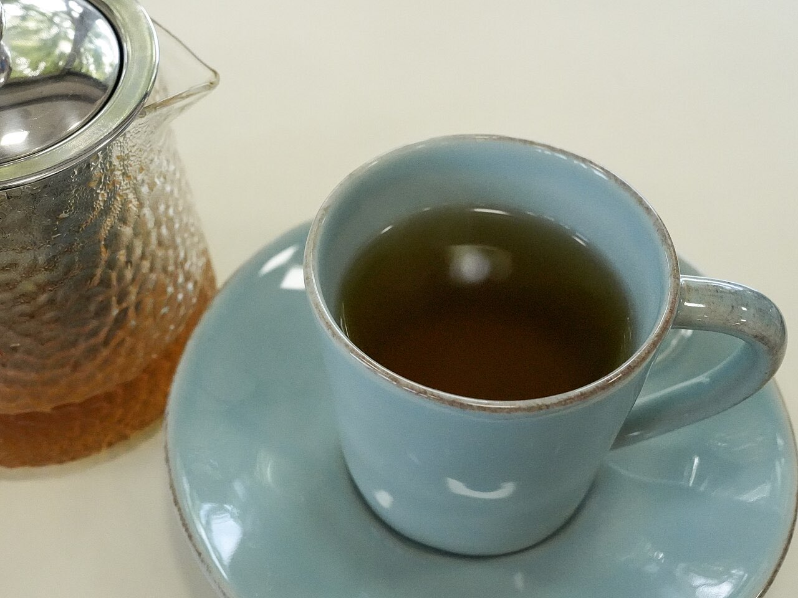
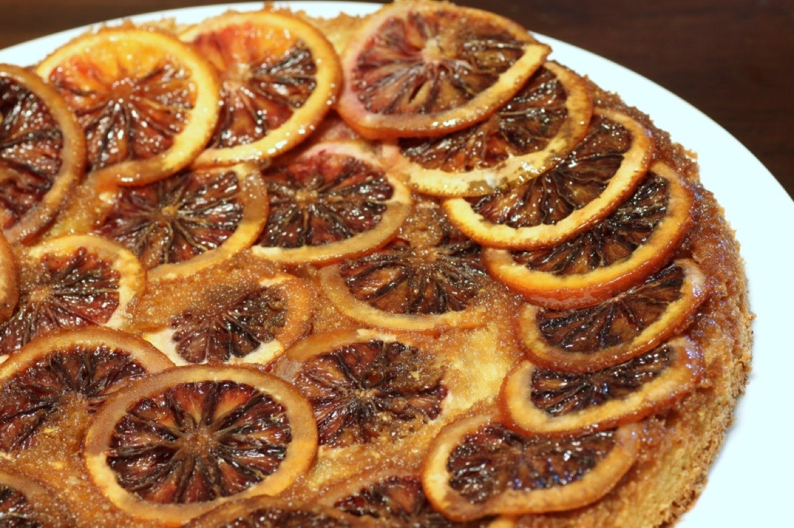
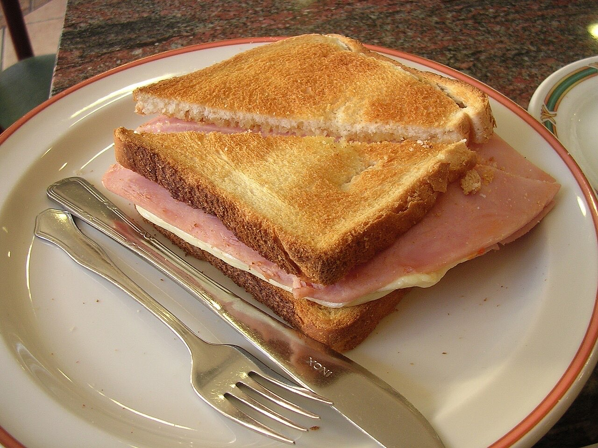
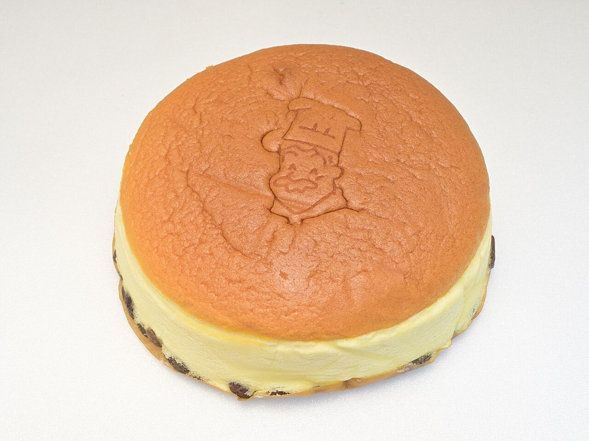

Café / tea room · Guimarães
Cafetaria de Londres
Tea and conversation on Avenida de Londres
Cafetaria de Londres is a café and tea room on Avenida de Londres, in Guimarães. Take an unhurried break with a tea or a coffee.
Tea room
A calm pause, with hot tea.
Café
Coffee in the middle of the morning or afternoon.
Avenida de Londres
Getting here: Av. de Londres, Guimarães.



Illustrative photos · the final site uses your own.
Orders
Place your order
Tell us what you need and when you'd like to collect it or have it delivered. We reply by WhatsApp.
This is how the message would reach your WhatsApp. Nothing is sent in this demo.
Visit
Where to find us
Av. de Londres, 4835-066 GuimarãesOpening hours
Opening hours to be confirmed
Proposal for Cafetaria de Londres
Like it? This could be your website.
This page was made especially for your business by João Machado, a web developer here in Guimarães. It includes:
- Fast mobile page with your name and identity
- Menu and prices that are easy to update
- Buttons to call, send a WhatsApp and get directions
- Booking or order requests straight to WhatsApp
- Your own domain (e.g. cafetarialondres.pt) linked to Google Maps
I take care of hosting and maintenance. No commitment.